Префектура Тоттори · дюны Тоттори · прогулки и еда
Вокруг дюн Тоттори: фэтбайки у моря, песчаные скульптуры, рыбный рынок и колотый лёд
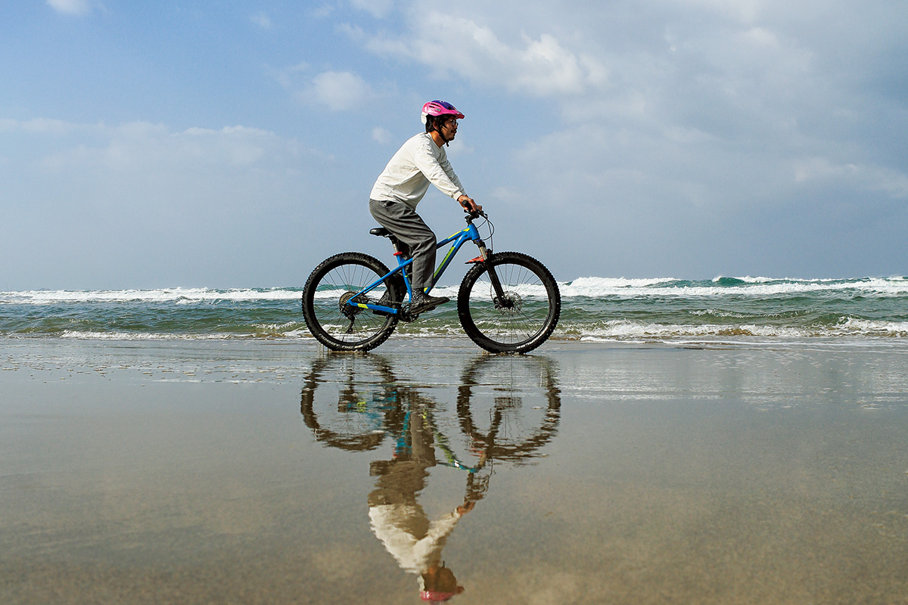
Тоттори, самая малонаселённая префектура Японии, удобна своей компактностью: от аэропорта до города, моря и гор здесь рукой подать. Главная её достопримечательность, песчаные дюны, окружена местами, ради которых стоит задержаться: музеем песчаных скульптур, рыбным рынком и маленькими кафе.
Дюны
Песок, море и рыба
Дюны Тоттори тянутся вдоль побережья Японского моря и входят в национальный парк. Их всю жизнь снимал фотограф Сёдзи Уэда (1913–2000), уроженец префектуры, прославившийся постановочными кадрами с людьми на фоне песка. Пейзаж здесь захватывает даже в пасмурный день.
До дюн легко добраться: аэропорт Тоттори стоит совсем рядом с городом, а от центра недалеко и до побережья, и до горных районов. Префектура к тому же славится продуктами моря и гор. Здесь ловят краба мацуба и рыбу хатахату, а из мяса здесь гордятся местной говядиной вагю.
Фэтбайк
Велосипедом по песку
Фэтбайк это велосипед с очень широкими колёсами, и мчаться на нём по песку особенно весело. Компания «Трейл он» водит туры на таких велосипедах прямо по национальному парку. Маршрут проходит через дюны, по лесу и вдоль берега.
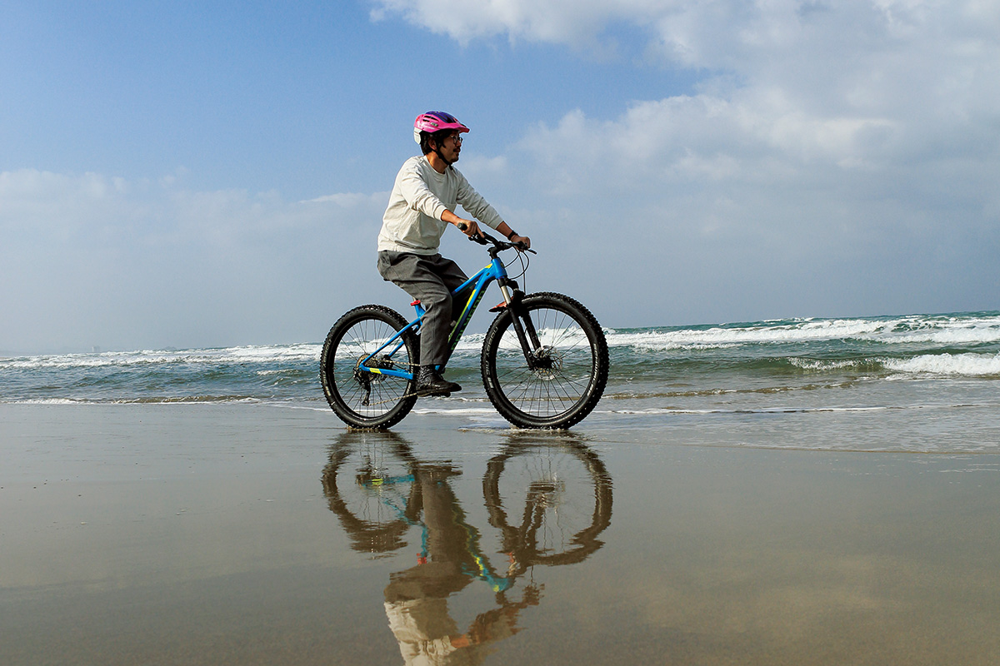
Мало кто знает, что зеркальный пейзаж, как на боливийском солончаке Уюни, можно увидеть и в Тоттори. Если повезёт с погодой, мокрый песок у моря отражает небо, и на прогулке получаются похожие снимки.
«Трейл он», туры на фэтбайках
- Адрес
- префектура Тоттори, Юрихама, Уно, 1709-1 (офис)
- Телефон
- +81 80-1649-1796 (по предварительной записи)
- Часы работы
- 9:30–18:00
- Выходные
- нерегулярно
- Сайт
- trailon.jp
Музей
Скульптуры из песка
У самых дюн работает музей песчаных скульптур. Его называют первым в мире музеем, где выставляют только фигуры из песка. Идея музея в том, чтобы путешествовать по миру с помощью песка: каждая выставка посвящена одной стране, и для неё создают новые скульптуры.
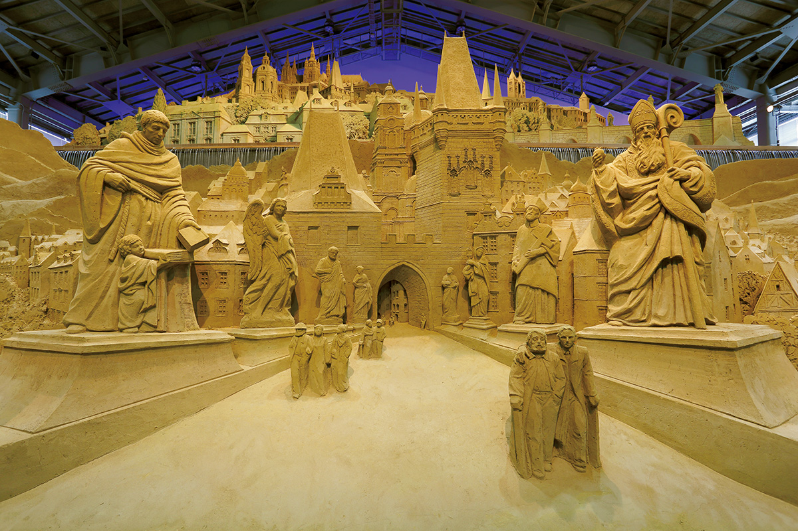
В 2021 году темой выставки были Чехия и Словакия. Вход тогда стоил 600 иен.
Музей песчаных скульптур у дюн Тоттори
- Адрес
- префектура Тоттори, Тоттори, Фукубэ-тё Юяма, 2083-17
- Телефон
- +81 857-20-2231
- Часы работы
- 9:00–16:00, в субботу до 18:00 (последний вход за 30 минут до закрытия)
- Выходные
- без выходных во время выставки
- Цены / Вход
- 600 иен
- Сайт
- sand-museum.jp
Рынок
«Кароити»: кухня Тоттори
Морской рынок «Кароити» в порту Тоттори называют кухней префектуры. Здесь продают краба мацуба, хатахату и другие дары местного моря, а заодно и сувениры. Рыбу можно не только купить: в здании работают закусочные, где готовят блюда из утреннего улова.
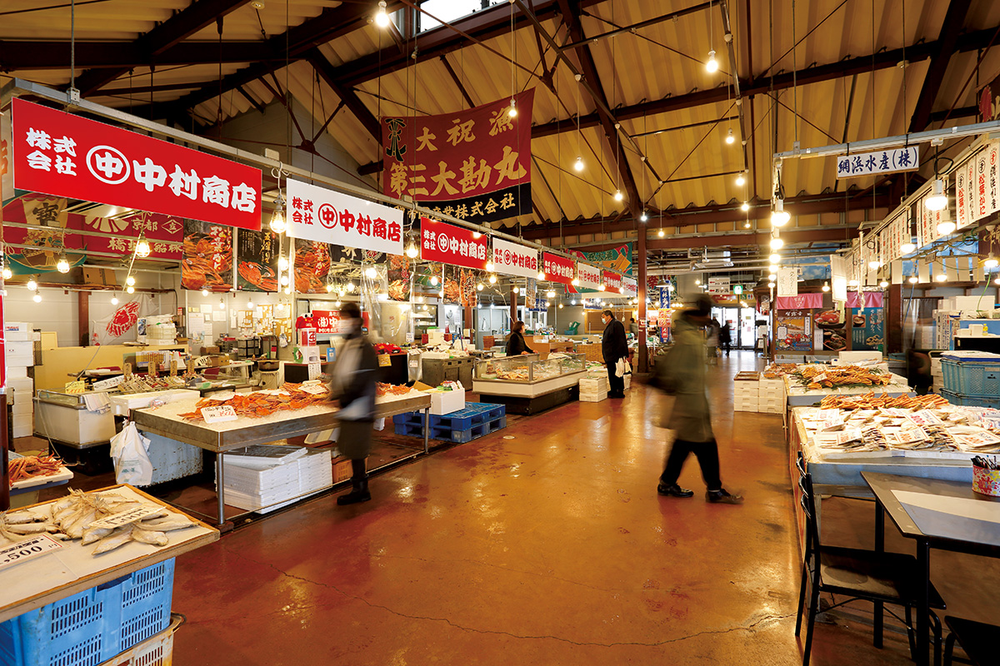
Морской рынок «Кароити»
- Адрес
- префектура Тоттори, Тоттори, Каро-тё Ниси, 3-27-1
- Телефон
- +81 857-38-8866
- Часы работы
- 9:00–16:00 (рыбный рынок)
- Выходные
- нет
- Сайт
- karoichi.jp
Колотый лёд
«Санкаку гори»: лёд от мастеров пудинга
В мае 2021 года прямо напротив дюн открылось кафе «Санкаку гори», где подают какигори, японский колотый лёд с сиропом. Его открыла соседняя кондитерская «Тотто пурин», которая делает пудинги.
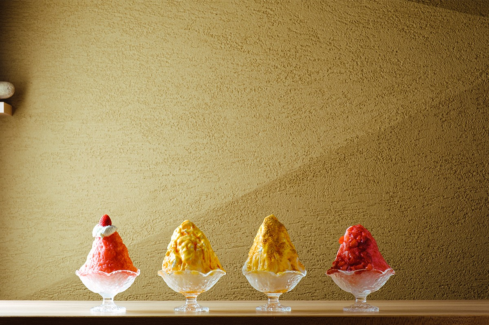
Лёд здесь делают из воды горы Дайсэн, высшей точки региона Тюгоку. Эта вода считается одной из лучших в Японии, но в самой префектуре её долго почти не пили. Хозяева кафе уверены, что вкуснее воды в стране нет, и заказывают из неё лёд у мастеров, которые делают лёд.
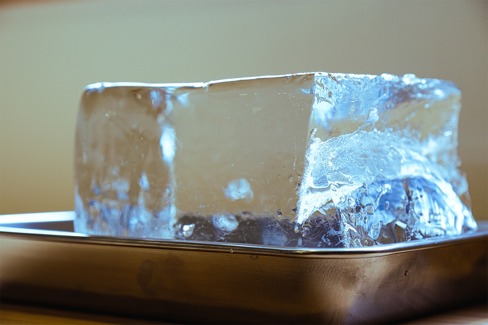
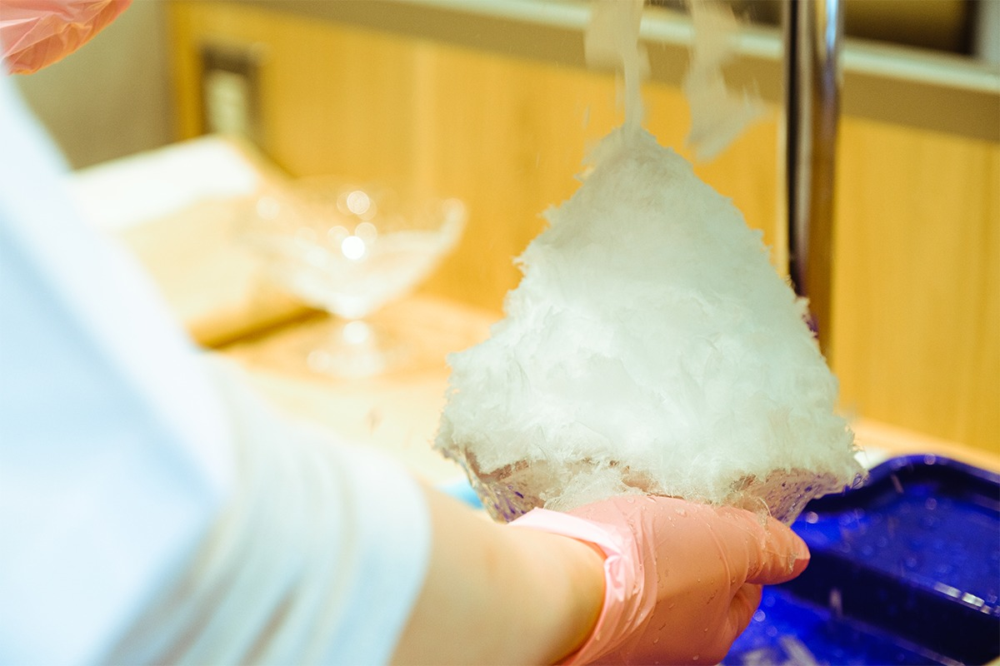
Важен и сам способ. Если блок проморожен насквозь, нож идёт с трудом, и стружка получается хрустящей. Поэтому лёд начинают понемногу оттаивать ещё накануне, и он ложится мягкими пушистыми хлопьями. С ними хорошо сочетаются густые тягучие сиропы. Лёд подают при правильной температуре, так что от него не ломит голову.
Клубничный лёд
Для него берут клубнику «Тоттэоки», собственный сорт префектуры. На одну порцию уходит около 20 ягод. Авторский клубничный соус и обжаренная клубника дают сразу несколько оттенков вкуса, сладости и текстуры: такое блюдо могла придумать только кондитерская. В 2021 году порция стоила 950 иен с налогом.
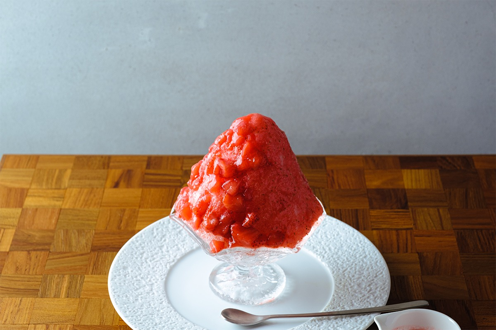
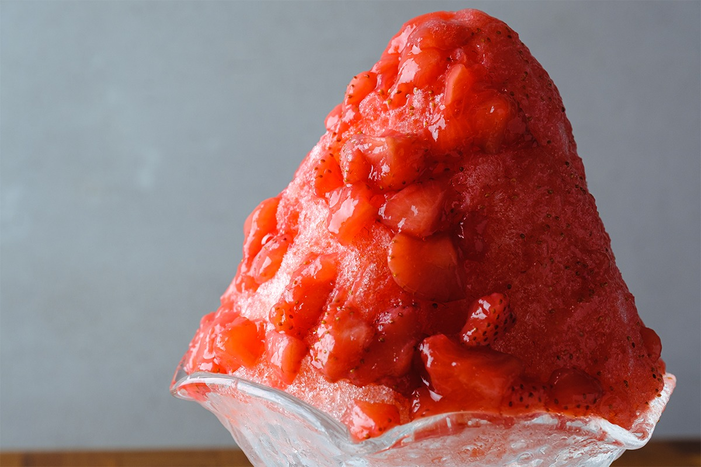
Лёд «Шорткейк»
Сезонная порция в виде клубничного торта: ешь лёд, а кажется, что торт, и до последней ложки не надоедает. В среднем слое спрятан сюрприз, который есть только в этом десерте. Стоил 1000 иен с налогом в 2021 году.
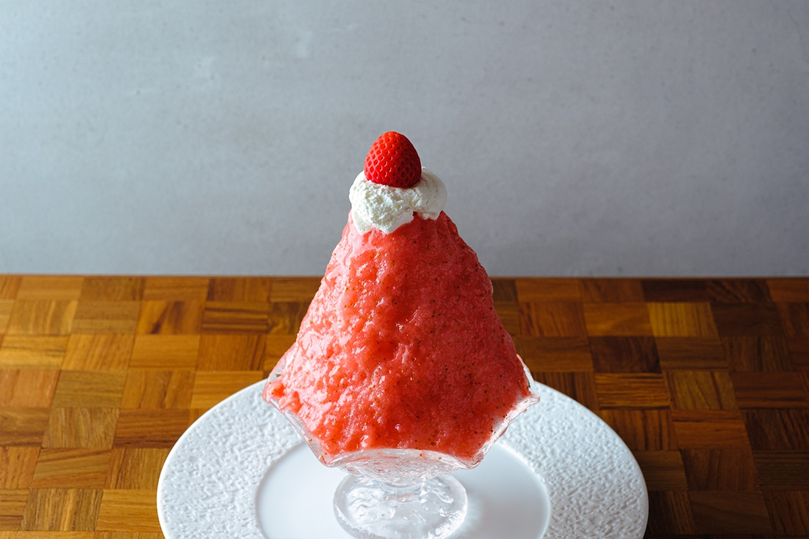
Пудинговый лёд
Здесь лёд поливают авторским соусом из того же пудинга, что продают в «Тотто пурин», и получается лёд и пудинг в одной вазочке. По желанию сверху добавляют карамельный соус. Порция стоила 800 иен с налогом в 2021 году.
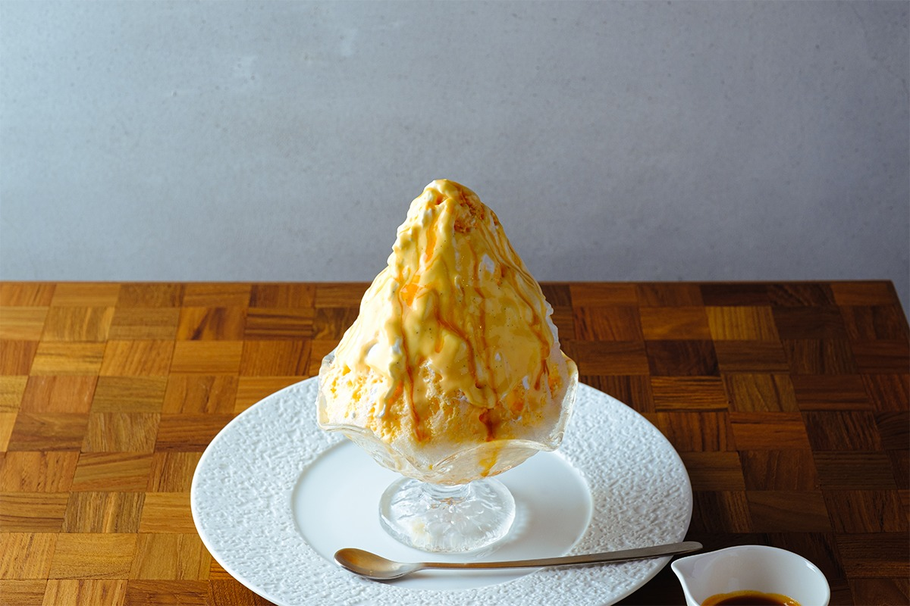
Лёд с песочным пудингом
Фирменный «суна-пурин», песочный пудинг «Тотто пурин», теперь можно попробовать и в виде льда. Сверху его посыпают авторской карамелью в порошке. В одной ложке три текстуры: пушистый лёд, гладкий пудинговый соус и хрустящая карамель. В 2021 году порция стоила 850 иен с налогом.
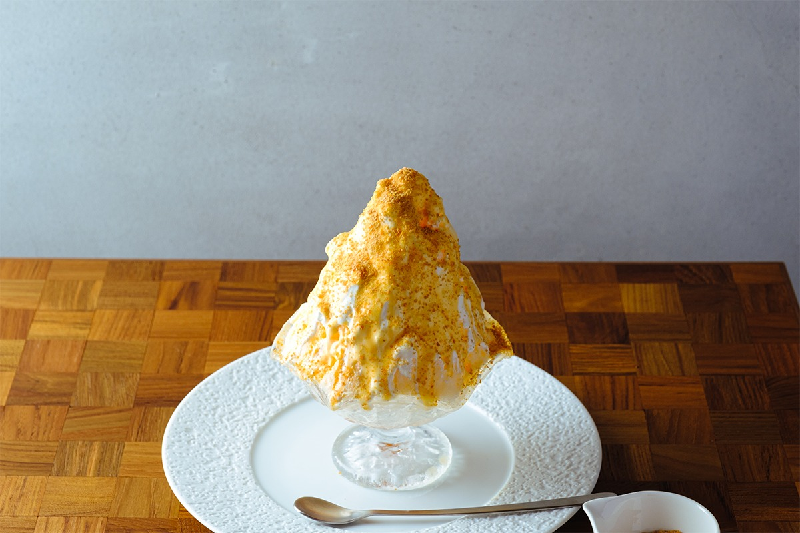
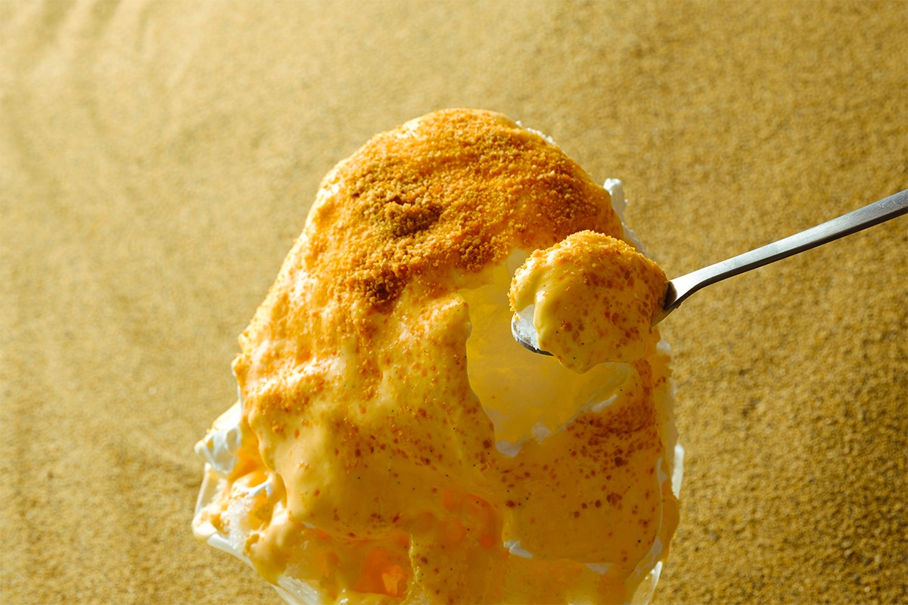
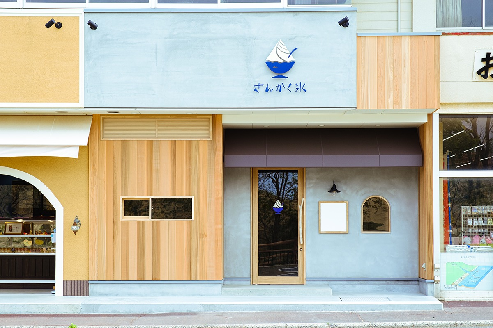
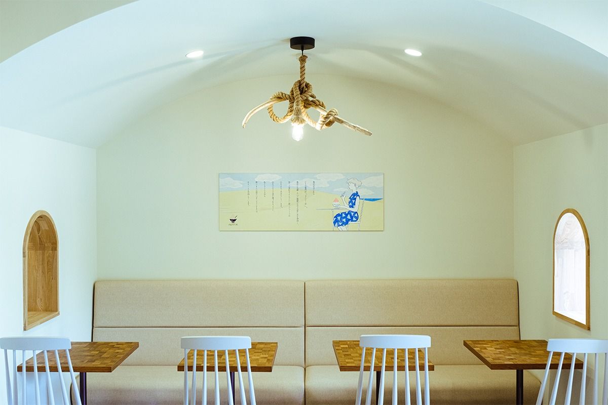
«Санкаку гори»
- Адрес
- префектура Тоттори, Тоттори, Фукубэ-тё Юяма, 2164-657, здание «Сан-Космос», 103-1
- Телефон
- +81 70-8325-3688
- Часы работы
- в будни 10:00–16:00, в выходные и праздники 10:00–17:00
- Выходные
- вторник, среда
- Сайт
- sankakugoori.com
Пудинг
«Тотто пурин»: пудинг из любви к Тоттори
Главное для «Тотто пурин» в том, чтобы через пудинг растить любовь к Тоттори. В префектуре много вкусных продуктов, и хозяева гордятся тем, что выросли в таком месте. Им хочется, чтобы и гости из других регионов почувствовали интерес к жизни рядом с природой.
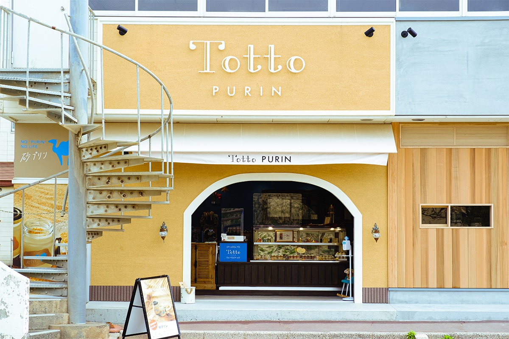
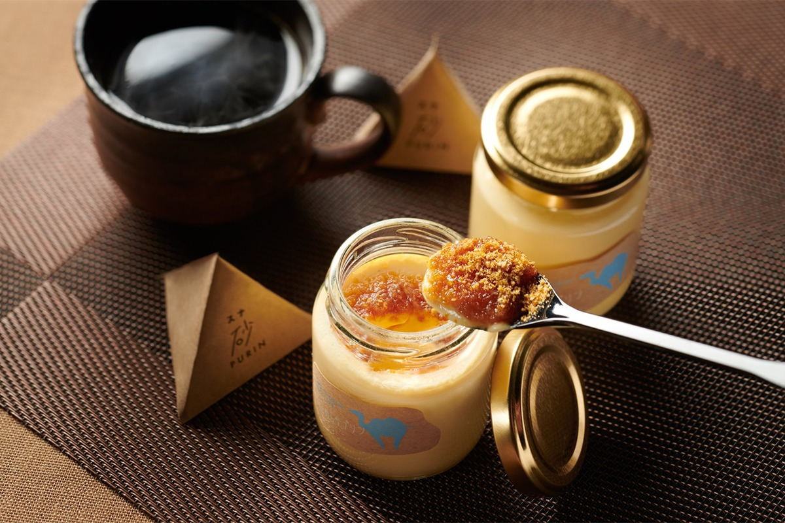
Хозяева хотят, чтобы и местные, и туристы уходили отсюда влюблёнными в Тоттори. В 2021 году песочный пудинг стоил 400 иен, нежный пудинг 300 иен, а пудинг с солёной карамелью 350 иен, всё без налога.
«Тотто пурин»
- Адрес
- префектура Тоттори, Тоттори, Фукубэ-тё Юяма, 2164-657
- Телефон
- +81 70-8325-3688
- Часы работы
- в будни 12:00–17:00, в выходные и праздники 10:00–17:00
- Выходные
- вторник, среда
- Цены / Вход
- песочный пудинг 400 иен, нежный пудинг 300 иен, пудинг с солёной карамелью 350 иен (без налога)
- Сайт
- tottopurin.com
Фото: Синъити Кимура.